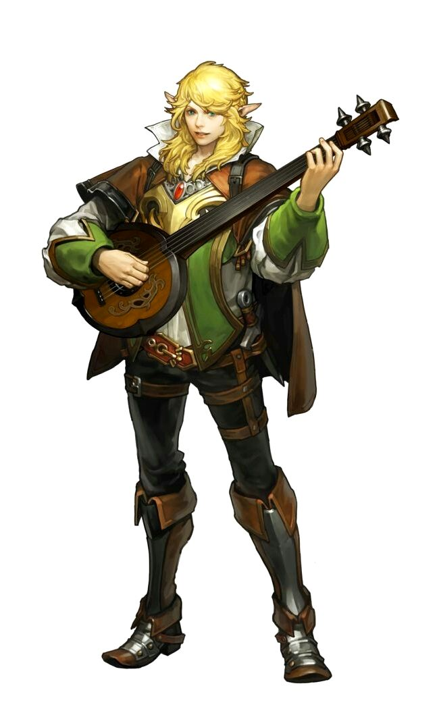

На свете есть много чудес и секретов, но не каждому удается их отыскать. Смекалка, талант и магия помогают самым хитроумным открыть для себя эти чудеса при помощи убеждения, манипуляций и вдохновения. Мастера в одном или нескольких видах искусства, барды всегда знают чуть больше, чем кажется окружающим, и умеют применять эти знания, чтобы обходить опасности. Они сообразительны и очаровательны, а их умения разнообразны. Игроки, мастера на все руки, ученые, исполнители, лидеры, трикстеры - они могут быть кем угодно, и необязательно кем-то одним. Каждый день сулит барду новые возможности, приключения и опасности - и только знания вкупе с мастерством позволяют ему взять от своей жизни все лучшее.
Барды хорошо умеют запутывать и выводить из строя врагов, а также вдохновлять и усиливать союзников. Бард сражается и оружием, и магией, причем предпочитает держаться подальше от ближнего боя, чтобы, поддерживая товарищей и подкашивая врагов, не опасаться, что его выступление прервут.
Мировоззрение: Любое.
КЗ:d8.
Стартовое богатство: 3d6 x 10 зм (105 зм в среднем).
Акробатика(Лвк), Блеф(Хар), Внимание(Мдр), Дипломатия(Хар), Запугивание(Хар), Знание(высший свет)(Инт), Знание(география)(Инт), Знание(инженерное дело)(Инт), Знание(история)(Инт), Знание(краеведение)(Инт), Знание(магия)(Инт), Знание(планы)(Инт), Знание(подземелья)(Инт), Знание(природа)(Инт), Знание(религия)(Инт), Изворотливость(Лвк), Исполнение(Хар), Использование магических устройств(Хар), Колдовство(Инт), Лазание(Сил), Ловкость рук(Лвк), Маскировка(Хар), Оценка(Инт), Проницательность(Мдр), Профессия(Мдр), Ремесло(Инт), Скрытность(Лвк), Языкознание(Инт)
Пункты навыков за уровень: 6 + модификатор Интеллекта.
| Ур | БМА | Стойкость | Реакция | Воля | Прочее | Закл/день (кр1) | Закл/день (кр2) | Закл/день (кр3) | Закл/день (кр4) | Закл/день (кр5) | Закл/день (кр6) |
|---|---|---|---|---|---|---|---|---|---|---|---|
| 1 | +0 | +0 | +2 | +2 | Эрудиция барда, выступление барда, фокусы, контрпесня, отвлечение, завораживание, песнь отваги +1 | 1 | - | - | - | - | - |
| 2 | +1 | +0 | +3 | +3 | Прикладное искусство, музыкальный слух | 2 | - | - | - | - | - |
| 3 | +2 | +1 | +3 | +3 | Песнь мастерства +2 | 3 | - | - | - | - | - |
| 4 | +3 | +1 | +4 | +4 | 3 | 1 | - | - | - | - | |
| 5 | +3 | +1 | +4 | +4 | Песнь отваги +2, хранитель знаний 1/день | 4 | 2 | - | - | - | - |
| 6 | +4 | +2 | +5 | +5 | Внушение, прикладное искусство | 4 | 3 | - | - | - | - |
| 7 | +5 | +2 | +5 | +5 | Песнь мастерства +3 | 4 | 3 | 1 | - | - | - |
| 8 | +6/+1 | +2 | +6 | +6 | Погребальная песнь | 4 | 4 | 2 | - | - | - |
| 9 | +6/+1 | +3 | +6 | +6 | Боевое вдохновение | 5 | 4 | 3 | - | - | - |
| 10 | +7/+2 | +3 | +7 | +7 | Мастер на все руки, прикладное искусство | 5 | 4 | 3 | 1 | - | - |
| 11 | +8/+3 | +3 | +7 | +7 | Песнь мастерства +4, песнь отваги +3, хранитель знаний 2/день | 5 | 4 | 4 | 2 | - | - |
| 12 | +9/4 | +4 | +8 | +8 | Целительное искусство | 5 | 5 | 4 | 3 | - | - |
| 13 | +9/+4 | +4 | +8 | +8 | 5 | 5 | 4 | 3 | 1 | - | |
| 14 | +10/+5 | +4 | +9 | +9 | Пугающая мелодия, прикладное искусство | 5 | 5 | 4 | 4 | 2 | - |
| 15 | +11/+6/+1 | +5 | +9 | +9 | Песнь мастерства +5, героическое воодушевление | 5 | 5 | 5 | 4 | 3 | - |
| 16 | +12/+7/+2 | +5 | +10 | +10 | 5 | 5 | 5 | 4 | 3 | 1 | |
| 17 | +12/+7/+2 | +5 | +10 | +10 | Песнь отваги +4, хранитель знаний З/день | 5 | 5 | 5 | 4 | 4 | 2 |
| 18 | +13/+8/+3 | +6 | +11 | +11 | Массовое внушение, прикладное искусство | 5 | 5 | 5 | 5 | 4 | 3 |
| 19 | +14/+9/+4 | +6 | +11 | +11 | Песнь мастерства +6 | 5 | 5 | 5 | 5 | 5 | 4 |
| 20 | +15/+10/+5 | +6 | +12 | +12 | Смертельное искусство | 5 | 5 | 5 | 5 | 5 | 5 |
| Ур | Кр0 | Кр1 | Кр2 | Кр3 | Кр4 | Кр5 | Кр6 |
|---|---|---|---|---|---|---|---|
| 1 | 4 | 2 | - | - | - | - | - |
| 2 | 5 | 3 | - | - | - | - | - |
| 3 | 6 | 4 | - | - | - | - | - |
| 4 | 6 | 4 | 2 | - | - | - | - |
| 5 | 6 | 4 | 3 | - | - | - | - |
| 6 | 6 | 4 | 4 | - | - | - | - |
| 7 | 6 | 5 | 4 | 2 | - | - | - |
| 8 | 6 | 5 | 4 | 3 | - | - | - |
| 9 | 6 | 5 | 4 | 4 | - | - | - |
| 10 | 6 | 5 | 5 | 4 | 2 | - | - |
| 11 | 6 | 6 | 5 | 4 | 3 | - | - |
| 12 | 6 | 6 | 5 | 4 | 4 | - | - |
| 13 | 6 | 6 | 5 | 5 | 4 | 2 | - |
| 14 | 6 | 6 | 6 | 5 | 4 | 3 | - |
| 15 | 6 | 6 | 6 | 5 | 4 | 4 | - |
| 16 | 6 | 6 | 6 | 5 | 5 | 4 | 2 |
| 17 | 6 | 6 | 6 | 6 | 5 | 4 | 3 |
| 18 | 6 | 6 | 6 | 6 | 5 | 4 | 4 |
| 19 | 6 | 6 | 6 | 6 | 5 | 5 | 4 |
| 20 | 6 | 6 | 6 | 6 | 6 | 5 | 5 |
Ношение брони и обращение с оружием:Бард умеет обращаться со всем простым оружием, а также с длинным и коротким мечами, рапирой, легкой дубинкой, коротким луком и кнутом. Он умеет использовать легкие доспехи и щиты (кроме башенных). Бард может творить свои заклинания в легком доспехе и со щитом, не будучи подвержен обычной возможности провала заклинания из-за доспеха. Как и другие мистические заклинатели, бард в среднем или тяжелом доспехе имеет вероятность провала заклинания, если у заклинания есть жестовый компонент. Бард с уровнями в других мистических классах имеет обычную вероятность потратить заклинания таких классов впустую, когда творит их в доспехах.
Заклинания:Бард умеет применять мистические заклинания из списка. Он может сотворить любое известное ему заклинание, не подготавливая его заранее. У всех бардовских заклинаний есть словесный компонент - в качестве него может использоваться как художественная речь, так и пение, и даже музицирование. Чтобы освоить или применить заклинание, барду нужно значение Харизмы, равное минимум 10 + круг заклинания. СЛ испытания его заклинаниями равна 10 + круг заклинания + модификатор Харизмы барда.
Подобно другим заклинателям, бард может применять ограниченное количество заклинаний каждого круга в день. Его базовый дневной запас чар приведен в таблице «Бард». Кроме того, он получает дополнительные заклинания в день, если у него достаточно высокая Харизма (см. таблицу «Модификаторы характеристики и дополнительные заклинания»).
Kаждому барду известно весьма ограниченное количество заклинаний. На 1 уровне он знает четыре заклинания 0 круга и два - 1 круга (по своему выбору). На каждом следующем уровне он изучает одно или более новых заклинаний, как показано в таблице «Заклинания барда». В отличие от количества заклинаний в день, количество известных барду заклинаний от его Харизмы не зависит: числа в таблице фиксированные.
Начиная с уровня 5 и далее раз в три уровня барда (на уровнях 8, 11 и т. д.) бард может заменить одно из известных ему заклинаний на какое-либо другое. При этом он теряет прежнее и получает взамен новое. Круг обоих заклинаний должен быть одинаковым и как минимум на один ниже, чем максимальный доступный барду.
Каждый раз бард может заменить только одно заклинание и выбирает, делать ли это, в тот момент, когда получает новые чары на этом уровне.
Барду нет нужды заранее готовить свои заклинания. Он всегда может сотворить любые из известных ему заклинаний, если еще не израсходовал свой дневной запас чар соответствующего круга.
Эрудиция барда (Экс):Бард добавляет половину своего уровня (минимум 1) ко всем проверкам Знаний. Он может совершать проверки даже тех Знаний, которые он не изучал.
Выступление барда:Бард умеет применять навык Исполнение для наложения магических эффектов на всех вокруг - в том числе на себя, если он того желает. Он может применять эту способность ежедневно в течение количества раундов, равного 4 + его модификатор Харизмы. За каждый уровень после 1 бард получает еще 2 раунда выступдения в день. Каждый раунд бард может производить один любой освоенный им эффект выстушения, перечень которых зависит от его уровня.
Чтобы начать выступление, барду нужно основное действие, но далее он может продолжать его, используя каждый раунд свободное действие. Выбор других эффектов от выступления предполагает прекращение прежнего выступления и начало нового - это требует основного действия.
Выступление барда нельзя прервать (подобно творению заклинания), но оно немедленно кончается, если бард убит, парализован, в шоке, без сознания или по иным причинам не может каждый раунд совершать свободное действие, чтобы продолжить. Бард не может одновременно поддерживать более чем один тип выступления.
Начиная с 7 уровня бард может начать выступление, используя сопутствующее действие, а не основное. На 13 уровне он может использовать для этого быстрое действие.
Любое выступление барда содержит звуковые и/или визуальные компоненты. Если в выступлении есть звуковые компоненты, то оно действует только на тех, кто его слышит. Многие виды выступлений являются «языковыми» - требуют понимания языка (см. описания). Глухой бард в 20% случаев не справляется с выступлением, если оно содержит звуковой компонент, однако раунд попытки вычитается из его дневного лимита. Глухие существа невосприимчивы к выступлениям бардов со звуковыми компонентами.
Если выступление барда имеет визуальный компонент, то оно действует только на тех, кто его видит. Слепой бард в 50% случаев не справляется с выступлением, если оно содержит визуальный компонент, однако раунд попытки вычитается из его дневного лимита. Слепые существа невосприимчивы к выступлениям бардов с визуальными компонентами.
Контрпесня (Св): На 1 уровне бард получает способность нейтрализовать основанные на звуке магические эффекты (но не заклинания со словесным компонентом). Каждый раунд, исполняя контрпесню, он совершает проверку Исполнения (клавишные, ударные, струнные, духовые инструменты или пение). Все существа в радиусе 30 футов от барда (включая его самого) при воздействии на них звукового или языкового магического эффекта могут использовать результат проверки Исполнения барда вместо результата испытания, если первый оказался выше. Если существо в пределах действия контрпесни уже находится под влиянием звукового или языкового магического эффекта, оно каждый раунд, пока слышит контрпесню, получает новый шанс избавиться от этого воздействия, но обязано использовать вместо результата испытания результат выступления барда. Контрпесня не спасает от эффектов, не позволяющих проходить испытания. У нее всегда есть звуковые компоненты.
Отвлечение (Св): На 1 уровне бард получает способность нейтрализовать магические эффекты, основанные на зрительном восприятии. Каждый раунд отвлечения он совершает проверку Исполнения (лицедейство, шутовство, танец или красноречие). Любое существо в радиусе 30 футов от барда (включая его самого) при воздействии на него эффекта иллюзии (узора или фикции) может использовать результат проверки Исполнения барда вместо результатов своего испытания, если первый оказался выше. Если существо в зоне действия отвлечения уже находится под влиянием немгновенной иллюзии (узора или фикции), оно получает новую попытку выйти из-под этого влияния каждый раунд, пока действует отвлечение, но обязано использовать вместо результата испытания результат выступления барда. Отвлечение не спасает от эффектов, не позволяющих проходить испытания. У него всегда есть визуальные компоненты.
Завораживание (Св): На 1 уровне бард получает способность завораживать существ своим выступлением. Каждое завороженное существо должно быть в радиусе 90 футов от барда, видеть и слышать его, а также иметь возможность уделять ему внимание. Бард также должен видеть всех этих существ. Завораживание не работает, если рядом идет бой или существ отвдекают какие-то сопоставимые опасности. Бард может заворожить одно существо плюс еще одно за каждые свои три уровня выше 1.
Каждое существо в зоне действия может пройти испытание Воли (СЛ 10 + 1/2 уровня барда + модификатор Харизмы барда), чтобы избежать эффекта. Если существо проходит испытание, то бард не может снова пытаться заворожить его в течение 24 часов. Если испытание провалено, существо сидит и тихо наблюдает за выступлением барда, пока оно продолжается. Завороженное существо получает штраф -4 ко всем проверкам навыков, которые совершает в качестве ответных действий (например, Внимания). Любая потенциальная угроза позволяет ему снова попытаться пройти испытание. Любая явная угроза (выхватывание оружия, сотворение заклинания и т. д.) автоматически выводит из завороженности. Завораживание является эффектом очарования (принуждение), действующим на разум. Оно всегда включает и звуковые, и визуальные компоненты.
Песнь отваги (Св): Начиная с 1 уровня бард может выступать, воодушевляя союзников (включая себя) и придавая им смелости и сил в бою. Союзник для получения преимуществ от песни должен быть способен видеть или слышать выступление. В этом случае он получает бонус +1 (боевой дух) к испытаниям против обольщения и ужаса, а также +1 (мастерство) к атакам и урону, наносимому оружием. На 5 уровне - и каждые шесть уровней барда после 5 - этот бонус увеличивается на 1 до максимума в +4 на 17 уровне.
Песнь отваги является способностью, действующей на разум. Для ее применения могут быть задействованы как звуковые, так и визуальные компоненты. Бард должен выбрать в начале своего выступления, какой компонент он будет использовать.
Песнь мастерства (Св): Начиная с 3 уровня бард может использовать свои выступления, чтобы помогать союзникам справляться с самыми разными задачами. Союзник должен быть в радиусе 30 футов от барда и слышать его. Он получает бонус +2 (мастерство) к проверкам одного навыка, пока продолжает слышать барда. Бонус увеличивается на 1 за каждые четыре уровня барда после 3 (+3 на 7 уровне, +4 на 11 уровне, +5 на 15 уровне и +6 на 19 уровне). С некоторыми навыками - например, со Скрытностью - применение песни мастерства сочетается плохо, и ведущий вправе запретить его. Бард не может применять песнь мастерства к себе. Песнь мастерства требует звукового компонента.
Внушение (Пс): Бард 6 уровня и выше может с помощью своего выступления сделать внушение (аналогично одноименному заклинанию) существу, которое уже заворожил (см. выше). Применение этой способности не снимает эффект завораживания, но для ее активации требуется основное действие (в дополнение к свободному, поддерживающему эффект завораживания). Бард может применять эту способность к одному и тому же существу более одного раза за выступление. Внушение не сокращает количество оставшихся раундов выступления барда в день. Испытание Воли (СЛ 10 + 1/2 уровня барда + модификатор Харизмы барда) позволяет отменить эффект внушение. Оно действует только на одно существо, является эффектом очарования (принуждение), действующим на разум, языковым и требующим звукового компонента.
Погребальная песнь (Св): Бард 8 уровня и выше может с помощью своего выступления пугать противников, вводя их в состояние потрясения. Это действует только на тех, кто находится в радиусе 30 футов от барда и может видеть и слышать его. Эффект сохраняется, пока противник остается в радиусе 30 футов, а бард продолжает выступление. От погребальной песни существо не может стать напуганным или впасть в панику, даже если оно уже было потрясенным до ее начала. Погребальная песнь является эффектом ужаса, действующим на разум, и требует звуковых и визуальных компонентов.
Боевое вдохновение (Св): Бард 9 уровня и выше может использовать свое выступление, чтобы воодушевить себя или одного союзника в радиусе 30 футов от него. За каждые три уровня выше 9 бард может повлиять этим выступлением еще на одного союзника (до максимума в 4 цели на 18 уровне). Все, кого бард хочет воодушевить, должны его видеть и слышать. Воодушевленное существо получает 2 дополнительных КЗ (2d10), соответствующее количество временных ПЗ (с модификатором за Выносливость существа, как обычно), бонус +2 (мастерство) к атакам и +1 (мастерство) к испытаниям стойкости. Дополнительные КЗ считаются обычными для определения действия заклинаний, эффекты которых зависят от количества КЗ цели. Боевое вдохновение является эффектом, действующим на разум, и требует звуковых и визуальных компонентов.
Целительное искусство (Св): Бард 12 уровня и вьше может с помощью выступления воспроизвести эффект заклинания массовое исцеление тяжелых ранений с УЗ, равным уровню барда. Это выступление также снимает состояния утомления, дезориентации и потрясения со всех, на кого подействовало. Для применения этой способности надо потратить 4 раунда на выступление, а все исцеляемые должны видеть и слышать барда все это время. Целительное искусство действует на всех, кто в течение выступления был в радиусе 30 футов от барда. Оно требует звуковых и визуальных компонентов.
Пугающая мелодия (Пс): Бард 14 уровня и выше может использовать свои выступления, чтобы привести врагов в ужас. Все враги должны быть в радиусе 30 футов от барда и слышать его. У каждого из них есть возможность пройти испытание Воли (СЛ 10 + 1/2 уровня барда + модификатор Харизмы барда), чтобы избежать эффекта. В случае успеха существо получает невосприимчивость к этой способности на 24 часа. Если оно проваливает испытание, то становится напуганным и бежит прочь, пока может слышать барда. Пугающая мелодия требует звуковых компонентов.
Героическое воодушевление (Св): Бард 15 уровня и выше способен пробудить истинного героя в себе или одном союзнике в радиусе 30 футов. За каждые три уровня барда выше 15 он может воодушевить еще одно существо. Все воодушевляемые должны слышать и видеть барда; они получают бонус +4 (боевой дух) ко всем испытаниям и +4 (уклонение) к КБ. Это длится, пока они могут видеть и слышать выступление. Героическое воодушевление является эффектом, действующим на разум, требующим звуковых и визуальных компонентов.
Массовое внушение (Пс): Эта способность работает так же, как внушение, но позволяет барду 18 уровня и выше одновременно применять его к любому количеству завороженных им существ. Массовое внушение является эффектом очарования (принуждение), воздействует на разум, зависит от языка и требует звуковых компонентов.
Смертельное искусство (Св): Бард 20 уровня или выше может выступить так, что один его зритедь умрет от радости или печали. Зритель должен находиться в радиусе 30 футов от барда, а также видеть и слышать, как тот выступает, в течение полного раунда. Чтобы избежать эффекта, зритель должен пройти испытание Воли (СЛ 10 + 1/2 уровня барда + модификатор Харизмы барда). В случае успеха он остается ошеломлен на 1d4 раунда, а бард больше не может применять к нему смертельное искусство в течение 24 часов. В случае провала испытания зритель умирает. Это искусство является смертельным эффектом, действующим на разум и требующим звуковых и визуальных компонентов.
Фокусы: Барды умеют применять ряд фокусов (заклинаний нулевого круга), как указано в таблице «Заклинания барда». Они творятся так же, как все прочие заклинания, но не занимают ячеек и могут быть использованы сколько угодно раз.
Прикладное искусство (Экс):На 2 уровне бард выбирает один вид навыка Исполнения. Он может использовать свой модификатор к нему (полный, включая +3 за классовый навьк) вместо модификатора к связанным с ним навыкам - неважно, есть у него в них пункты или нет. На 6 уровне - и каждые 4 уровня далее - бард может выбрать еще один вид Исполнения для использования его вместо других навыков.
Виды Исполнения и связанные с ними навыки: Духовые (Дипломатия, Дрессировка), Клавишные (Дипломатия, Запугивание), Лицедейство (Блеф, Маскировка), Красноречие (Дипломатия, Проницательность), Пение (Блеф, Проницательность), Струнные (Блеф, Дипломатия), Танец (Акробатика, Полет), Ударные (Дрессировка, Запугивание), Шутовство (Блеф, Запугивание).
Музыкальный слух (Экс):Начиная со 2 уровня бард становится устойчив как к выступлениям других бардов, так и к звуковым атакам в целом. Он получает +4 к испытаниям против выступлений бардов, звуковых и языковых эффектов.
Хранитель знаний (Экс):Начиная с 5 уровня бард становится знатоком всего на свете. Он получает право, не бросая кость, взять результат 10 при любой проверке Знания, в котором у него есть пункты. Бард не обязан это делать и может совершать проверки по обычным правилам. Кроме того, он имеет право раз в день в качестве основного действия без броска взять результат 20 при любой проверке Знания. Бард может использовать эту способность дополнительный раз в день за каждые шесть уровней выше 5, до максимума в 3 раза на 17 уровне.
Мастер на все руки (Экс):На 10 уровне бард получает способность применять любой навык, даже тот, которым нельзя пользоваться, не имея в нем пунктов. Начиная с 16 уровня все навыки являются для барда классовыми. На 19 уровне он может без броска кости взять результат 10 при любой провеке навыка, даже если это обычно невозможно.
Талантливые барды могут изучать или создавать шедевры, необычное применение способности выступление барда требует специальной подготовки, описания шедевров придерживаются следующих рекомендаций.
Название Шедевра:Помимо названия шедевра, в этой строке указывается, на какой навык Исполнения или на какие навыки опирается шедевр.
Предпосылки:Как и черты, у шедевров есть предпосылки, которые бард, которым бард должен соотвветствовать, чтобы выучить их, только барды могут выучить шедевры.
Предпосылки:Каждый шедевр имеет стоимость, чтобы изучить его. Как правило, бард должен потратить одно из своих заклинаний барда, известных по определенному кругу заклинания, или выбрать его вместо черты. Бард может потратить известное заклинание барда, уровня выше, чем указанный уровень, чтобы выучить шедевр (например, тратить известное заклинание 4-го уровня, чтобы выучить шедевр, который требует тратить известное заклинание 3-го уровня).
Эффект:Это краткое описание подытоживает, что происходит, когда бард использует в выступлении шедевр. Если не указано иное, эффекты шедевра являются сверхъестественными. Нежелательные существа могут попытаться пройти проверку Воли против эффекта шедевра, спасбросок СЛ для шедевров равен 10 + 1/2 уровня барда + бонус Харизмы барда. Шедевры, которые дублируют заклинания, используют уровень заклинателя барда для УЗ заклинания.
Использование:В этой строке указывается, сколько раундов выступлений барда должен использовать бард для активации шедевра. В некоторых случаях бард может продлить продолжительность шедевра, добавив дополнительные раунды выступления барда, как если бы это было любое другое использование выступления барда. Бард расходует указанное количество раундов выступления барда, когда он начинает исполнять шедевр, если его прервать, попытка не удастся, и потраченные раунды выступления потеряются.
Действие:В этой строке указывается тип действия, выполняемого шедевром. Если для активации требуется только основное действие, то есть возможность активировать выступление барда быстрее (на 7-м уровне активация - это действие перемещения, а на 13-м она становится быстрым действием) относится и к шедевру.
Назад к списку классов